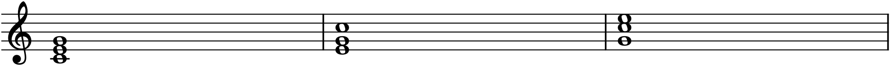
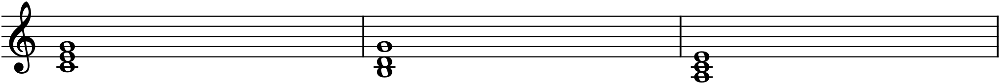
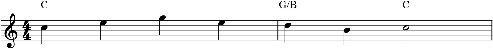

Every triad so far has been in root position — root on the bottom, then the third, then the fifth, the tidy snowman of Chapter 11. But a chord is defined by which notes it contains, not by their vertical order, and rearranging them opens up something essential: the freedom to choose which note sits in the bass. That choice is called inversion, and it is what lets harmony have a bass line that moves gracefully instead of lurching from root to root. This chapter also introduces the two shorthands musicians use to name chords on the page — the classical figures and the lead-sheet symbols — so that the chords you now understand can be written down compactly.
13.1Which note is in the bass
Take C–E–G. Leave all three notes but put a different one at the bottom, and you get the chord’s three positions:
- Root position — the root (C) in the bass. C–E–G.
- First inversion — the third (E) in the bass. E–G–C.
- Second inversion — the fifth (G) in the bass. G–C–E.

All three chords in Figure 13.1 are C major; no notes were added or taken away. What changed is the bass — the lowest sounding note — and the bass matters enormously to how a chord feels. Root position is the most stable and grounded; first inversion is lighter and more mobile; second inversion is the least stable of the three and is used with care. The chord’s identity is unchanged, but its character is not.
13.2Why invert: the bass line
The reason inversions are worth the trouble is the bass line. If every chord sat in root position, the bass would leap around following the roots — C up to F, down to G — a jagged, ungainly line. Inversions let you pick, for each chord, a bass note that connects smoothly to its neighbours, so the bass can walk by step like a melody of its own.

The progression in Figure 13.2 — I, then V in first inversion, then vi — has a bass that steps gently down, C–B–A, where root-position chords would have forced a clumsy leap. This is the everyday work of inversions: not to change which chords you use, but to give the lowest voice a shapely line. Good bass lines are made largely of well-chosen inversions.
13.3Naming inversions: the figures
Inversions have a classical shorthand inherited from figured bass, where a composer wrote only the bass note and some numbers telling the player which intervals to stack above it. The numbers are the intervals from the bass up to the other chord tones:
- Root position is a 5 and a 3 above the bass (fifth and third) — written as nothing at all, since it is the default.
- First inversion is a 6 and a 3 above the bass, abbreviated to just 6.
- Second inversion is a 6 and a 4 above the bass, written 6/4.
Attached to a Roman numeral, these figures give a complete label: I is a root-position tonic, I6 is first inversion, I⁶₄ is second inversion; likewise V6 is a first-inversion dominant, and so on. So the middle chord of Figure 13.2 is a V6 — a dominant with its third in the bass. This compact notation is how harmonic analysis marks not just which chord, but which inversion, in a single symbol.
13.4Chord symbols: the lead sheet
Popular, jazz, and folk musicians use a different, absolute shorthand — the chord symbol — written above the staff, naming each chord directly so a player can realize it however they like. A chord symbol has up to three parts: a root letter, a quality, and an optional bass note after a slash.
- C — C major (a bare letter means major).
- Cm — C minor; Cdim or C° — diminished; Caug or C+ — augmented.
- C7 — C dominant seventh; Cmaj7 — major seventh; Cm7 — minor seventh (the four-note chords of the next chapters).
- C/E — C major with E in the bass — a slash chord, which is simply a chord symbol’s way of writing an inversion. C/E is exactly the first-inversion C-major triad from §13.1.

The lead sheet in Figure 13.3 is how an enormous amount of music is actually circulated — a single melody line with symbols, from which any competent player can produce a full accompaniment. It is worth being fluent in, and you will use it yourself when sketching harmony quickly in Part 3.
13.5Two systems, two jobs
You now have two ways to name a chord, and they are not rivals — they do different jobs. Roman numerals are relative to a key and describe a chord’s function (I, V6, ii): they are the tool of analysis, for understanding why a progression works, and they transpose to any key unchanged. Chord symbols are absolute and name the actual pitches (C, G/B, Am7): they are the tool of performance, for telling a player what to play right now. Use Roman numerals to think about harmony; use chord symbols to hand it to someone. Fluency means being able to move between them — to look at a lead sheet and hear the functions, or to take a Roman-numeral analysis and voice it at the keyboard.
In MuseScore
MuseScore writes both systems, and inverting a chord is a matter of moving one note.
- Invert a chord by moving its lowest note up an octave (or its top note down): select the note and press Ctrl+↑ / Ctrl+↓. Move the C of a root-position C–E–G up an octave and the E becomes the bass — first inversion. (There is also a Tools ▸ Respell and, for whole chords, dragging in the score, but the octave shift is the quick way.)
- Add chord symbols with Ctrl+K: click the note where the chord starts, press the shortcut, and type the symbol —
C,Am7,G/B,F#dim. MuseScore formats it properly above the staff and moves to the next beat with Space. Slash chords and all the qualities from §13.4 are understood. - Add Roman numerals with figures through Add ▸ Text ▸ Roman Numeral Analysis: type
I6,V6,I64and MuseScore stacks the inversion figures correctly. - Chord symbols can even play back — enable it in the mixer or playback settings — so you can hear a lead sheet realized as blocked chords under the tune.
Try it: enter the three chords of Figure 13.2 — C major, then G major, then A minor — all in root position, and play it; hear the bass leap. Now select the bass G of the middle chord and press Ctrl+↓ to drop it… then rebuild it as a first-inversion G (B in the bass) and play again. The same chords, but the bass now walks C–B–A, and the little progression suddenly sounds finished.